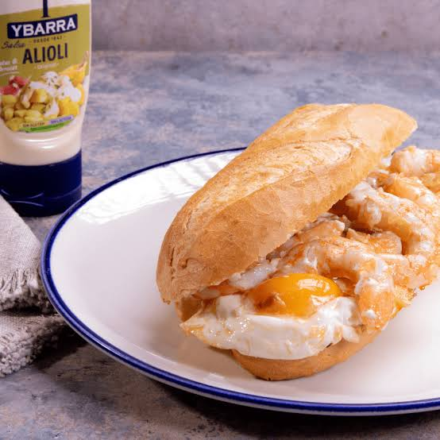

lorena vuelve
| Lunes | Martes | Miercoles | Jueves | Viernes | |
| [1] Administracion de sistemas ges Vera Martínez, Francisco Javier 1-15 | [1] SRI-Servicios de red e Interne Barba Muñoz, Juan Pablo 1-15 | [1] ASO-Administracion de sistemas González Ruiz, Sergio Luis 1-15 | [1] Optativa GS Arquillo Cruz, Jose 1-15 | [1] Itinerario personal para la em Santana Bravo, Silvia 1-15 | |
| [1] Ingles profesional GS Gómez Sánchez, María Antonia 1-15 | [1] SRI-Servicios de red e Interne Barba Muñoz, Juan Pablo 1-15 | [1] ASO-Administracion de sistemas González Ruiz, Sergio Luis 1-15 | [1] Optativa GS Arquillo Cruz, Jose 1-15 | [1] Itinerario personal para la em Santana Bravo, Silvia 1-15 | |
| [1] Ingles profesional GS Gómez Sánchez, María Antonia 1-15 | [1] SRI-Servicios de red e Interne Barba Muñoz, Juan Pablo 1-15 | [1] ASO-Administracion de sistemas González Ruiz, Sergio Luis 1-15 | [1] Seguridad y alta disponibilida López López, José Antonio 1-15 | [1] ASO-Administracion de sistemas González Ruiz, Sergio Luis 1-15 | |
| - | - | - | - | - | |
| [1] Seguridad y alta disponibilida López López, José Antonio 1-15 | [1] Itinerario personal para la em Santana Bravo, Silvia 1-15 | [1] Administracion de sistemas ges Vera Martínez, Francisco Javier 1-15 | [1] Seguridad y alta disponibilida López López, José Antonio 1-15 | [1] ASO-Administracion de sistemas González Ruiz, Sergio Luis 1-15 | |
| [1] SRI-Servicios de red e Interne Barba Muñoz, Juan Pablo 1-15 | [1] Proyecto Intermodular de Admin González Ruiz, Sergio Luis 1-15 | [1] Administracion de sistemas ges Vera Martínez, Francisco Javier 1-15 | [1] IAW-Implantacion de aplicacion Barba Muñoz, Juan Pablo 1-15 | [1] IAW-Implantacion de aplicacion Barba Muñoz, Juan Pablo 1-15 | |
| [1] SRI-Servicios de red e Interne Barba Muñoz, Juan Pablo 1-15 | [1] Proyecto Intermodular de Admin González Ruiz, Sergio Luis 1-15 | [1] Optativa GS Arquillo Cruz, Jose 1-15 | [1] IAW-Implantacion de aplicacion Barba Muñoz, Juan Pablo 1-15 | [1] IAW-Implantacion de aplicacion Barba Muñoz, Juan Pablo 1-15 |
